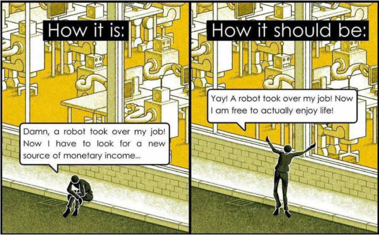

The first class was about the anthropocene we are inn. There are many upcoming problems in the world which are caused by the climate change. Also the raising amount of co2 in the air is changing the whole ecosystems called earth. When there is the growing season of the plants there is the most of the co2 in the air, because there is more photosynthesis. The big five of things poluting the most co2 in the air are energy, industry, transportation, construction and then agriculture. For capturing the amounts of co2 there are different methods, but its not always the good compared to costs, scalability, permanence and cleanness.
For example the method “Co2 utilisation” is to reuse co2 as economically valuable product. CO2 is either transformed using chemical reactions into materials, chemicals and fuels, or it is used directly in processes such as enhanced oil recovery. There are different ways of co2 storage: open which are is vegetation or soil, closed which is the seatwater or litospheere and cycling is for example in the transportation. Most of that utilisation is associated with medium- or long- term storage in open and closed pathways. Possible problems include not just direct CO2 emissions, but also other greenhouse gas emissions, direct and indirect land-use change; and emissions from other parts of the process. In order to make an appreciable difference to the global flows of CO2, pathways need to have the potential to scale quickly. Overall, CO2 utilisation has the potential to operate at large scale and at low cost, meaning it could be big business in the future. Methods or materials for CO2 utilisation could be: Co2 utilisation
• Chemicals (Co2 to build products, such as methanol, urea or polymers)
• Fuels (Combining hydrogen with CO2 to produce hydrocarbon fuels, including methanol, synfuels, and syngas)
• Microalgaes (Using microalgae to fix CO2 at high efficiencies and make biomass products like fuels and high-value chemicals)
• concrete building materials (CO2 can be used to “cure” cement, or in the manufacture of aggregates, which stores it for a long term)
• bioenergy with carbon capture (BECCS, In bioenergy with carbon capture, the operator captures CO2 by growing trees, produces electricity through bioenergy and sequesters the resulting emissions.)
• wathering (Crushing rocks, such as basalt, and spreading them on land can result in the accelerated formation of stable carbonate from atmospheric CO2.)
• forestry (could potentially store CO2 in buildings and, by doing so, displace cement use.)
• biochar/ soil carbon sequestration (could store CO2 in the soil but also enhance agricultural yields)
There is also a method which called carbon capture and storage (CCS), where limit Co2 emissions in the atmoshphere. This shows "open" use pathways (purple arrows) that store CO2 in leaky natural systems such as forests, which can go from a sink to a source very quickly. "Closed" pathways (red), such as building materials, provide nearly permanent storage of CO2. Finally, "cyclic" uses (yellow), such as CO2-based fuels, where carbon is redeployed over short periods of time.
Carbon storing habitats include: forests, salt marshes, seagrass beds, cold-water coral reefs, flame shell, muscle beds and mael (which is a type of sand). Trees and plants are capturing a big amount of Co2, but they also need a lot of water and long period of time to grow.
Also the climate change brings different problems like ice melting, which lets a big amount of Co2 in the air, because the glaciers include Co2. In 2019 many glaciers melted and let a big amount of pollution free. Also the diversity of animals is shrinking, for example in 2018 we have seen the last mal rhinoceros. At this point we know the most important ressources are drinking water and sand. And we know because of this importance the amount is increasing every day and could cause “wars” in the future.
inspiring projects: Ice watch (Mimuk rosing), Observatory. Hawai, Ages of the planet, Sea state dates, Sea & sun regile, The great animal orchestra – b.k., 421.21 – trinity cube, future library, Extintion: tell the truth, The oldest living things, Emergent cloud shape, Plastic glomerates and Aeroceno.
text
What is actually a job? Exchanging your label force for money, positive self-worth or education. In the past you just had a role in the society instead of a thing where you get exchanged a value. I think its not only about getting money, its more about having a task and develop yourself in your personality and in your skills. Also to get to know inspiring people, exchange opinions and thoughts and being part of a group. Unfortunately there is still a big amount of people mostly woman who can get a proper job and get an education in the field you really want to do. There is a big amount of woman who work unpaid and that’s why this whole economy works, this is what the feminism says. No education for all the woman in the world.
Through the industrialization and therefore the automation, fast fashion and production develop. Everything cames with pros and cons also the industrialization. Of course it was a help for many people to produce big products like cars like Henry Ford did. Also the 40 hours develop itself, which increased day by day. 1817: After the Industrial Revolution, activists and labor union groups advocated for better working conditions. People were working 80 to 100 hour weeks during this time. So it cannot be good for everyone, just for the receivers who can buy products cheap and easy scalable. Also if we need to clean the river in Vietnam or Bangladesh the t-shirt could not be as a cheap as it is. Then the gig economy developed of the atomization, like “Glovo”, “ubereats”, “getier”, “gorillas”, “lieferando” etc. Gig economy refers to a part of the labor market in which small jobs are awarded on a short-term basis to independent self-employed persons, freelancers or marginally employed persons.
But now we start changing the way of working, think about four working days per week to lower our stress and increase creativity. Also there are more and more robots like the “Kiba robots” in the amazon fulfilment center, who are doing the packaging and being part of the delivery process. Now we questions ourselves: will robots take all our jobs? “The rise of powerful AI will be either the best or the worst thing ever to happen to humanity. We do not know which.” -Professor Stephen Hawking. But you still need consumers and tasks. Of course there are many jobs got/getting detached from robots, but also many are developed and humans are good at inventing jobs to do, ai won´t change that. You can also call it the “fully automated luxury communism”. There is also this activism going on about the “luddite fallacy”: Luddites are people against industrialization for fear of job loss. The Luddite fallacy is the simple statement that new technologies do not lead to higher overall unemployment in the economy. New technologies do not destroy jobs - they only change the composition of jobs in the economy. All in all what could increase because of the robot automation is the care economy, but also the couch potato´s. Harrari: the useless class